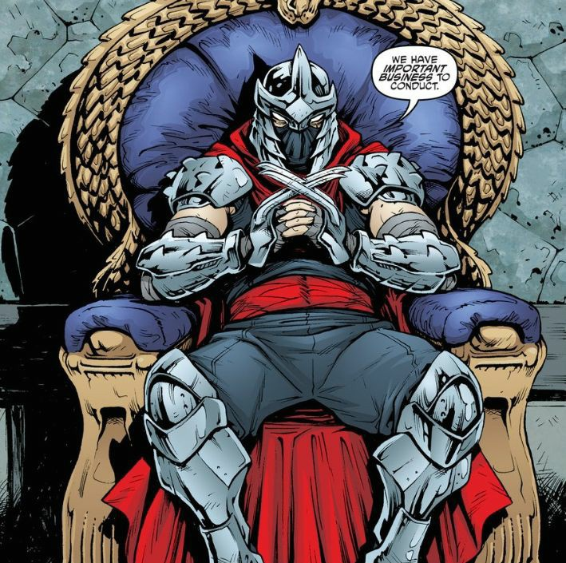

Call us on
Call us on  English
English Russian
Russian Kazakh
Kazakh Ukraine
Ukraine
Love polls? Do you want to see epic battles of various characters from various universes of pop culture? Then join our public INFINITY FIGHTS and vote for the strongest hero! Also in the discussions you can offer your options for battles. We welcome all newcomers and appreciate the old, but nevertheless we appreciate mutual respect and adequate behavior. Peace to all, meet in the heat of battle!
Shredder
"You'll be crushed under the Foot!"
Biography:
Skills and powers.
- -Strikes send adult men or mutant turtles flying several meters;
- - Grabbing an adult man by the throat, he can calmly hold him above the ground with one hand for a long time;
- - SOverpowers Raphael, although the tortoise can punch a man into a wall with such force that it cracks.
- - Kicked Krang's 2-3 meter robo suit down in combat.
- - Easily caught a hit with Michelangelo's nunchucks, though the joker's nunchuck hit smashed steel Mauser robots;
- - Easily broke Splinter's leg;
- - Jumps to a height of several meters;
- - Easily dodges thrown shurikens, dodges a shot from a pistol and cut off the opponent's hand before he has time to react;
- - Crouched, avoiding the Kraang's laser blast. With the help of acrobatics, he was able to dodge bullets from the alien suit's weapons;
- - Storm Shadow's speed is on par with Snake Eyes, who is able to run over a flying car so fast that it will not lag behind an SUV driving under them at full speed.
- - Dodged a flurry of mini-rockets fired by the Krang, but part of the explosion still hit Saki, but thanks to the dodge, the hit was indirect;
- -instantly hit the shuriken in vital organs and kill the target on the spot, but also to hit unprotected parts of the armor (like eyes);
- - Easily takes blows similar to his own in strength, withstands many large cut wounds on the body, which does not affect the combat capability of the Shredder;
- - Lacerations do not slow or excite Saki. A punch to the jaw of the 2 meter Krang's exoskeleton caused a slight bleeding and only disoriented the shinobi for a couple of seconds, after which Oroku continued the fight;
- - Remained conscious after a massive and deep burn all over his back, although he was incapacitated;
- - Alopex's blow, which drove Shredder into the ground so that it cracked, left no injuries;
- - Master Foot's stamina is enough to single-handedly fight squads of ninjutsu masters or special forces squads and come out victorious without getting tired;
- - Shredder's combat skills are the best in history and the only warrior who could be his equal is Hamato Yoshi, aka Splinter. He does not disdain dishonest dirty tricks, deceptive blows. Shredder is able to easily defeat Karai alone with three Foot ninjas (even ordinary Foot ninjas are able to fight on a par with armed special forces), while verbally humiliating them. He killed the sent ninjas, two of whom he killed with a single swing of the katana. Defeating all four Teenage Mutant Ninja Turtles alone is like a warm-up for Saki. Also, without straining, he defeated the fox killer Alopex, although she is able to kill 4 ninja masters, while blindfolding herself. Equal to Splinter that he was able to kill a dozen Foot Ninjas alone. In the first battle with Splinter, Shredder defeated the master rat, and lost to his brother later, having defeated all four turtle brothers before that.
- -Steel pauldrons, bracers and leggings with blades. Even the weapons of the Ninja Turtles, which they use to cut steel robots, rebar and shotgun barrels, cannot penetrate Shredder's armor;
- - Kabuto, similar to armor;
- - Teko-kagi that cut steel and damage the Krang suit, the turtles' weapons are not capable of the latter;
- - Shurikens. Sharp enough to stick into a metal wall;
- - Katana similar to claws;